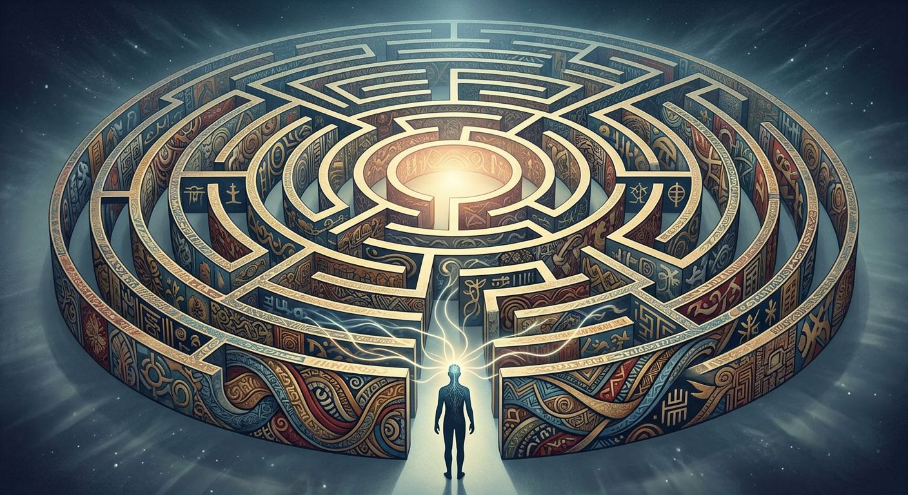

HNR 241: Consciousness and Agency, Fall 2026
Team Bernard
Six students working through one question: does consciousness actually do anything? Our builds and journals follow it through Gell, Scarry, Milton and Westworld.
Try , , or .
Every build is a ring
Each build revises the one before it, so we laid them out as a maze. Build 1 is the outer wall, and every new build moves one ring closer to the center. Rings light up as builds are posted.
Point at a ring to see who has written that build. Select it to open the build.
The team
More about usWhy Bernard
Bernard Lowe spends the first season of Westworld studying the hosts’ minds, then learns that his own mind was built too. That is roughly where this class puts us: examining consciousness with the same consciousness we are trying to examine.
Each of us chose one quality of consciousness to follow through the semester: phenomenality, deliberation, reflexivity, reconsolidation and narration. Our team reading, Alfred Gell’s Art and Agency, keeps returning to mazes and patterns that trap the mind, which is why both of our images are mazes.
Readings and links
External links open in a new tab- Alfred GellAuthor of Art and Agency, our team reading on patterns, mazes and the distributed person.
- Elaine Scarry, The Body in PainProjection, made objects, and “what it’s like to be me.”
- John Milton, Paradise LostFull text. Build 5 reads the serpent’s “surging maze” in Book IX.
- EpiphenomenalismThe view that consciousness does no causal work, which Build 1 takes on.
- Descartes on doubt and the sensesBackground for our first journal entries on illusion and the wax.
- Ludwig WittgensteinFamily resemblance, and how it might define consciousness, freedom and the self.
- Hegel’s master–slave dialecticThe frame for our journal entries on internal conflict.
- WestworldThe show the course reads alongside the philosophy.